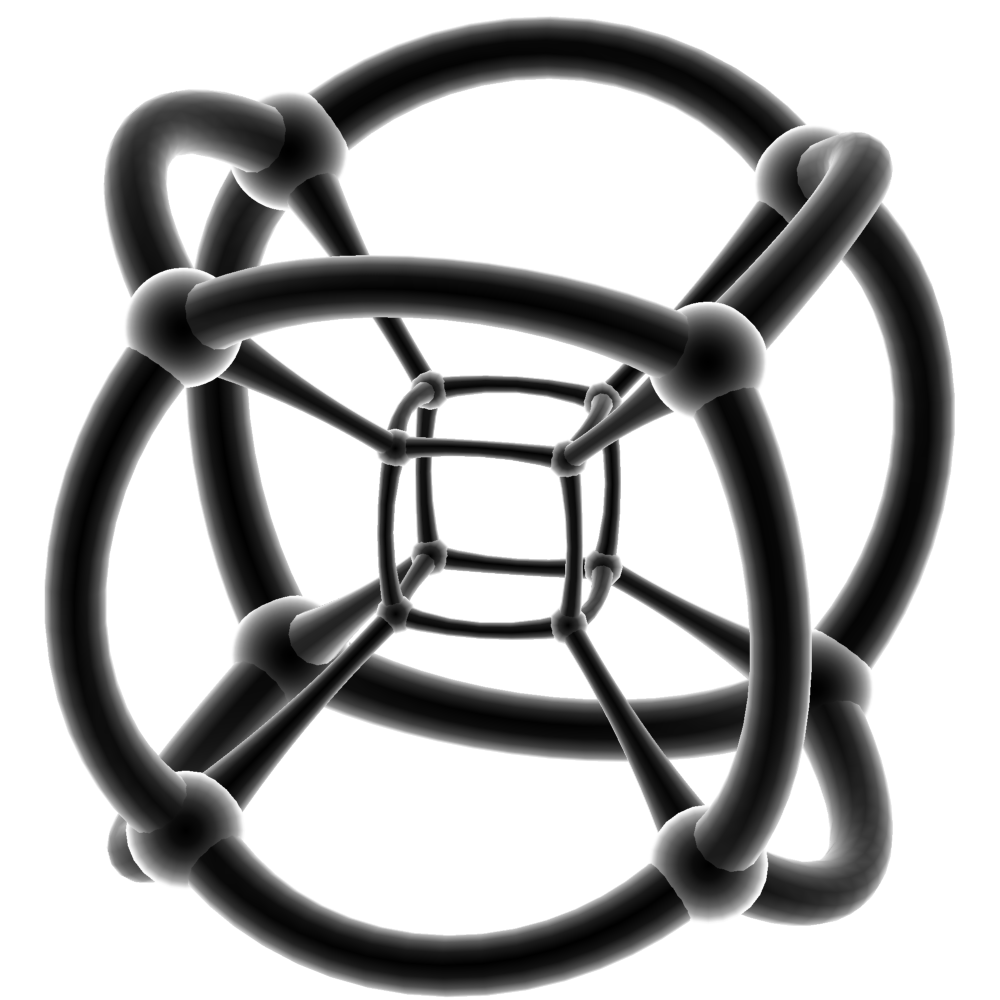

Skip to content

I. Assis
Valet Key
Initializing search
i-assis/cv
Posts
Publication
CV
Course Notes
DevKB
Awesome People
I. Assis
i-assis/cv
Posts
Posts
2022
2022
Testing diagrams!
Testing long article!
Testing boxes!
Testing math!
Table memo!
Publication
Publication
Journals & Conferences
Talks
Open-Source
Open-Source
𝐌 Matlab
☊ NodeJS
⟡ Ruby on Rails
𝐂/𝐂++
𝐖 Mathematica
∾ Solidity
🐍 Python
CV
CV
Dev & Data
Teaching & Research
Engineering
Volunteering
Results
Education
Education: Extra
Languages
Professional Events
Course Notes
Course Notes
Computer Science
Mechanical Engineering
Mechanical Technology
DevKB
DevKB
🌉 Data Structure
🌉 Data Structure
List
List
Array
Array
Static
Dynamic
Linked
Linked
ADT
Singly
Circular
Doubly
Doubly: Efficient
Header
Polynomial
Unrolled
Array vs. Linked
Skip
Stack
Stack
Adt
Overflow
Underflow
Operation
implementAsArray
implementAsListLinked
Application
Application
Polish
infixPostfix
postfixEvaluation
prefixEvaluation
Heap
Heap
Binary
Queue
Queue
Adt
implementByArray
Implement: by Linked List
operationInsert
operationDelete
Circular
Priority
Priority
Adt
Implement: by Linked List
Double-Ended
Set
Set
Queue
Queue
Adt
Pros
Cons
fastUnionSlowFind
fastUnionQuickFind
pathCompression
App
Map
Map
ADT
Tree
Tree
Binary
Binary
Memory
traversalThreadedQueueless
traversalThreadedStackless
Types
Expression
Expression
Xor
Xor
binarySearch
binarySearch
createWithTraversal
Operation
Traversal
Avl
Avl
Operation
redBlack
redBlack
Operation
multiWay
multiWay
B
bPlus
Generic
nAry
Variations
Graph
Graph
Representation
Representation
Adjacency: Matrix
Adjacency: List
Modelling
Modelling
Visualization
Visualization
Traversal
Traversal
Depth-First Traversal (DFS)
Breadth-First Traversal (BFS)
Sort
Sort
Topological
App
App
Connected Circles
Nine Tails
Weighted
Weighted
Representation
Modelling
Minimal Spanning Tree
Minimal Spanning Tree
Prim
Kruskal
Shortest Path
App
App
Weighted Nine Tails
File
File
Classification
Operation
Organization
Organization
Sequence
Sequence Index
Relative
Inverted
String
String
hashTable
treeBinarySearch
Tries
treeTernarySearch
treeSuffix
🏭 Algorithm
🏭 Algorithm
Design
Design
Classification
Class: by Implementation
Class: by Design Method
Classification: Other
Complexity
Complexity
Polynomial vs. Exponential
Decision: Problem
Decision: Procedure
Class
Type
Reduction
Recursion
Recursion
What
Why
Format
Memory
recursionIteration
Case
Case
2^n
x^n
1 + 2 + ... + n
Directory Size
Tower of Hanoi
Backtracking
Backtracking
What
Why
Format
Memory
Case
Sort
Sort
Classification
Bubble
Selection
Selection: Recursive
Insertion
Shell
Merge
Heap
Quick
Tree
Linear
Counting
Bucket/Bin
Radix
Topological
External
Comparison
Search
Search
Linear: Sequential
Linear: Unordered
Linear: Ordered/Sorted
Binary
Interpolation
Symbol Table
Hash
String
Select
Select
Sort
Partition
Linear
k-Smallest Element
Symbol
Symbol
Table
Table: Comparison
Table: Implementation
Hash
Hash
vs. Direct Address
Component
Table
Collision: Open Addressing
Collision: Separate Chaining
Load Factor
Rehash
Map with Hash
Set with Hash
Achieving O(1)
When not Use
Technique
Bloom Filter
Code
Function
String
String
Matching
Brute Force
Matching: Rabin-Karp
Matching: Finite Automata
KMP
Boyer-Moore
Greedy
Greedy
Strategy
Always works?
Implement
Pros
Cons
Divide & Conquer
Divide & Conquer
Strategy
Always works?
Pros
Cons
Theorem
Dynamic Programming
Dynamic Programming
Property
vs. Greedy vs. Div & Conq
Approach
Implement
Longest Common Subsequence
Bitwise Programming
🧬 Design Pattern
🧬 Design Pattern
Creational
Creational
Builder
Factory
Factory: Abstract
Monostate
Prototype
Singleton
Behavioral
Behavioral
Chain of Responsability
Command
Iterator
Memento
Observer
State
Strategy
Template
Structural
Structural
Adapter
Bridge
Composite
Façade
Flyweight
Mediator
Proxy
🎸 System Design
🎸 System Design
Intro
Intro
Fundamentals
Client-Server
Network Protocols
Storage
Latency and Throughput
Availability
Caching
Proxy
Load Balancer
Hashing
Database: Relational
Store: Key-Value
Store: Paradigm
Replication
P2P Network
Polling
Stream
Configuration
Rate Limiting
Logging & Monitoring
MapReduce
HTTPS
API Design
Cloud Design Pattern
Cloud Design Pattern
Cache-Aside
Circuit Breaker
Compesating Transaction
Competing Consumer
Compute Resource Consolidation
External Configuration Store
Federated Identity
Gatekeeper
Endpoint Monitoring
Index Table
Leader Election
Materialized View
Pipe Filter
Priority Queue
Queue-Based Load Leveling
Runtime Reconfiguration
Scheduler Agent Supervisor
Sharding
Static Content Hosting
Subscriber
Throttling
Valet Key
Command & Query Responsability Segregation
Event Sourcing
Publisher
Retry
Distributed System
Distributed System
Asynchronous Messaging
Autoscaling
Caching
Compute Partitioning
Data: Consistency
Data: Partitioning
Data: Replication
Instrumentation
Telemetry
Multiple Data Center Deployment
Service Metering
Telemetry
Cases
Cases
Algo Expert
Code Deployment System
Stock Broker
FB News Feed
Google Drive
Reddit API
Netflix
Uber API
Slack
Air BnB
👷 Javascript
👷 Javascript
Functional Programming
Awesome People
Awesome People
Analysis ∨ Control
Learning ∧ Control
Game ∧ Control
Game
Learning
Optimization
Formal Methods
Information
Thermodynamics
Applied PDEs
Google Scholar Labels
Valet Key
¶
Last update:
2022-11-29
Created:
2022-11-29
Back to top